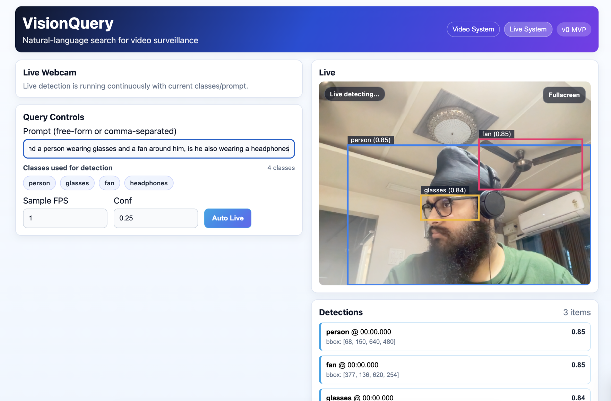
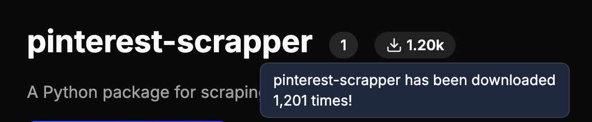
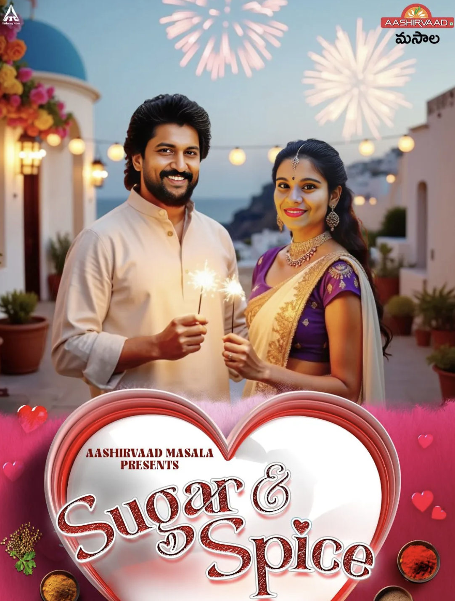

Guide to Speaker Diarization ↗
Speech AI
A practical guide to understanding speaker diarization — identifying who spoke when in an audio stream.
I build end-to-end AI systems across diffusion models, speech, video, retrieval-augmented generation, and computer vision — from research and fine-tuning to production deployment.
Experience
Projects
Applied ML pipelines — voice synthesis, face processing, and model deployment at scale.
Built a DiffSinger-based singing voice synthesis pipeline for an Ogilvy × Cadbury marketing campaign that reached 14,000+ users during Christmas 2024. Handled phoneme alignment, variance modeling, and acoustic synthesis on a 3-hour custom music dataset. Deployed real-time inference workflows using AWS Lambda.
Sample outputs ↗Deployed FaceFusion on Replicate for internal use cases and marketing campaigns. The pipeline accepts a JSON config with faceswap parameters per video segment, applies them frame-accurately, and stitches the final output using ffmpeg.
View on GitHub ↗Enabled natural language querying over videos using open-vocabulary object detection. Built frame sampling and a YOLO-World inference pipeline for dynamic class detection without retraining. Designed APIs for upload, querying, and timestamp-level detection results.
View on GitHub ↗
Retrieval pipelines, document processing, data tooling, and open-source packages.
Led research and development for a speech-to-speech POC for JioStar — converting English audio to Indian regional languages. Evaluated multiple pipeline approaches with a technical report benchmarking latency, speed, and output accuracy. Final POC built on OpenAI's Realtime API.
View on GitHub ↗Full-stack RAG application for searching 11,000+ SIGGRAPH 2025 paper chunks. Hybrid retrieval (semantic + BM25), Cohere re-ranking, LLM-generated answers with inline citations, and real-time streaming via SSE. Deployed frontend on Vercel, backend on Render.
View on GitHub ↗Enterprise RAG system for Tata Motors — query internal knowledge bases via natural language. Hybrid retrieval (embeddings + BM25), re-ranking, and RAGAS-based quality evaluation.
View on GitHub ↗Scalable pipeline for parsing scanned and structured PDFs. Multimodal OCR with layout understanding, asynchronous distributed processing via Celery and Redis.
Open-source Python package for scraping Pinterest images — search, download, HTML gallery generation, rate-limit handling, and CLI support. Published on PyPI.
View on GitHub ↗ Download Stats ↗
Analyzed correlation between video performance and semantic/emotional content features. Used LLMs for metadata extraction, structuring, and feature engineering.
Fine-tuning LoRAs, building ComfyUI inference workflows, generating images across styles, and producing full AI-generated films and video content.
Brave New Art — JioHotstar (Dec 2024)
Collaborated with Lenovo to create India's first fully AI-generated short film.
End-to-end production using FLUX, Midjourney, Runway, and Kling AI.
SMFG India Credit — Mother's Day AI Film (May 2025)
Produced an AI-generated short film for SMFG India Credit's Mother's Day campaign.
Generated images in varied artistic styles. Fine-tuned FLUX, SDXL, SD 3.5 LoRAs on Kohya_SS and published models to CivitAI.

Fine-tuned and published LoRA models on CivitAI:
Hackathons
Built note·it, a desktop learning agent for educational videos at the VideoDB Global Online Hackathon (May 2026). The app runs as a floating Electron overlay, captures screen and audio through VideoDB, indexes live streams with multimodal models, and writes structured study notes with screenshots into Notion.
Watch demo ↗ View on GitHub ↗Skills
Reading List
Research papers I'm reading, breaking down, and implementing.
View on GitHub ↗Writing
Technical articles, notes, and breakdowns from my engineering work.
View all writing on Medium ↗A practical guide to understanding speaker diarization — identifying who spoke when in an audio stream.
Education
Extras
Contact